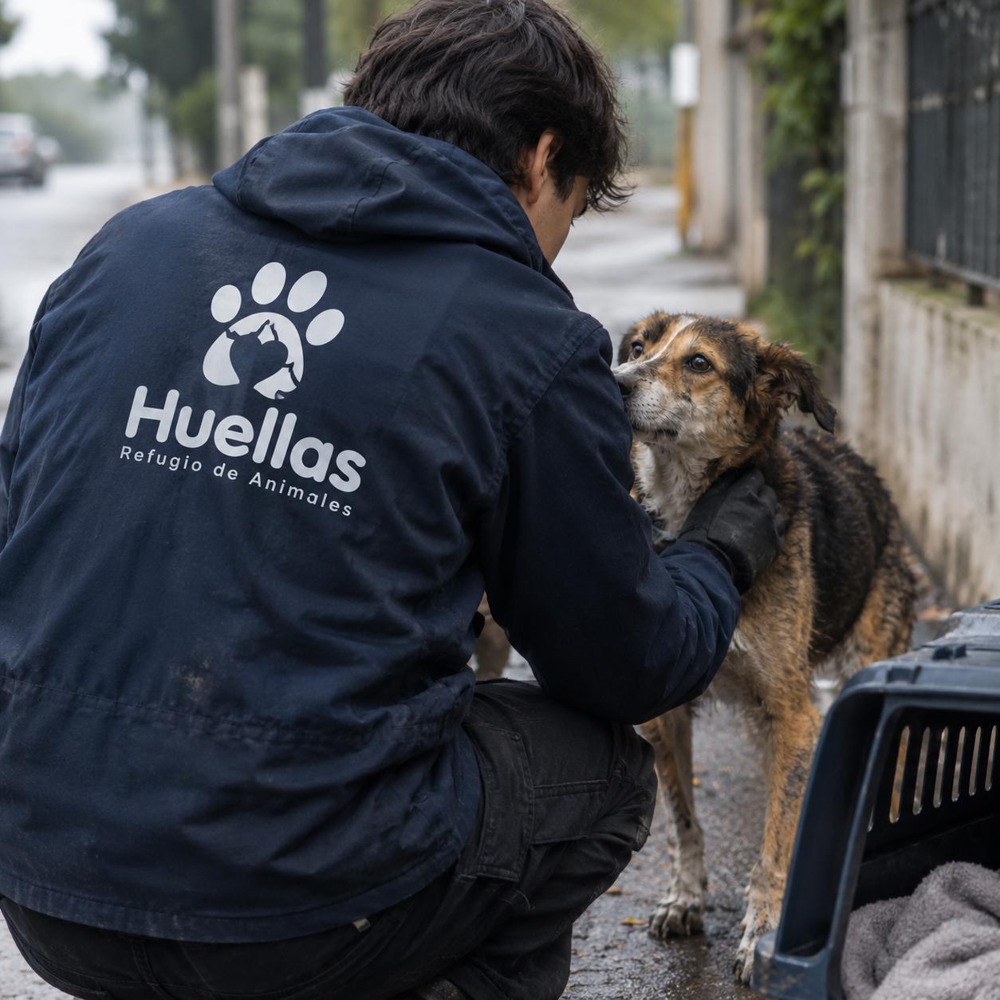
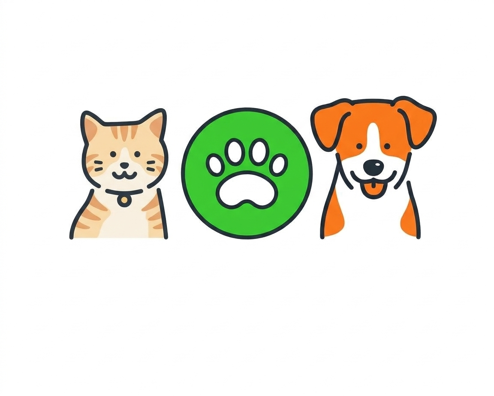

Conoce acerca de Huellas
Descubre nuestra historia, valores y compromiso con la protección de los animales.
Nuestra Historia
En Huellas, comenzamos nuestra trayectoria con una visión simple pero poderosa: proteger, cuidar y brindar una segunda oportunidad a los animales que más lo necesitan. Desde nuestros comienzos, entendimos que rescatar a un animal no significa solamente darle un lugar donde quedarse, sino también ofrecerle amor, atención y la posibilidad de volver a confiar.
Fundado el 21 de enero de 2010, nuestro refugio nació como un espacio destinado a recibir perros y gatos abandonados, maltratados o que se encontraban en situación de vulnerabilidad. Con el paso de los años, fuimos creciendo y construyendo una comunidad comprometida con el bienestar animal, convirtiendo a Huellas en un lugar de acogimiento, recuperación y esperanza.
Cada animal que llega a nuestro refugio tiene una historia diferente. Algunos necesitan recuperarse física y emocionalmente, mientras que otros simplemente necesitan sentirse seguros y queridos. Nuestro equipo y nuestros voluntarios trabajan día a día para brindarles los cuidados necesarios, acompañarlos durante su recuperación y prepararlos para encontrar una familia responsable que pueda ofrecerles el hogar que merecen.
Hoy, seguimos creciendo con el mismo compromiso que nos impulsó desde el primer día: ser un refugio donde cada huella tenga la oportunidad de convertirse en una nueva historia.

Nuestra Misión
En Huellas, nos dedicamos a rescatar, rehabilitar y encontrar hogares amorosos para animales que se encuentran en situación de vulnerabilidad. Nuestro compromiso no termina con el rescate: trabajamos para brindarles los cuidados necesarios, acompañarlos durante su recuperación y darles la oportunidad de comenzar una nueva vida junto a una familia responsable.
Al mismo tiempo, buscamos generar conciencia en nuestra comunidad sobre la importancia del bienestar animal, la tenencia responsable y la adopción. Creemos que la educación y la participación de las personas son fundamentales para fomentar el respeto hacia todas las criaturas y construir una sociedad donde ningún animal sea abandonado o maltratado.


Nuestros Valores
- Compasión: Tratamos a todos los animales con amor y respeto.
- Responsabilidad: Nos comprometemos a brindar el mejor cuidado posible a cada animal que llega a nuestro refugio.
- Transparencia: Mantenemos una comunicación abierta con nuestros donantes, voluntarios y la comunidad.
- Educación: Promovemos la conciencia sobre la importancia del bienestar animal y la adopción responsable.
